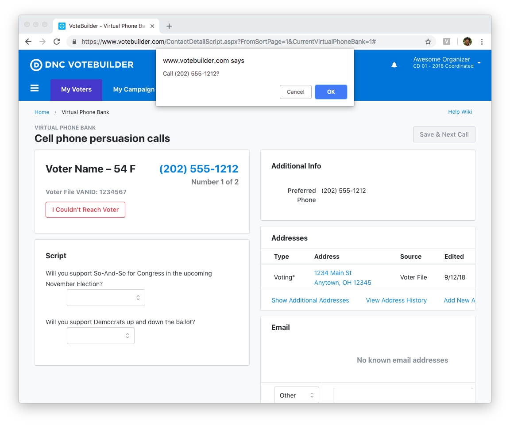

The Virtual Phone Bank (VPB) Preview Dialer turns NGP VAN's Virtual Phone Bank into a preview dialer.
When VPB loads a page, the Preview Dialer will confirm that you want to call the person, and then dial for you. The audio comes through your browser.

You can use the preview dialer to call cell phones that aren't legal to call with a predictive dialer.
You can also use it for volunteer recruitment calls, when you want to call more deliberately, skip occasionally, and avoid dropped calls from predictive dialing.
The preview dialer is a Chrome extension. It takes about 60 seconds to install and configure.
Email info@politicaldialingsystems.com to get your campaign set up.
©2018 Political Dialing Systems LLC.